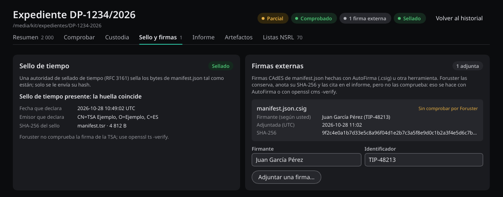
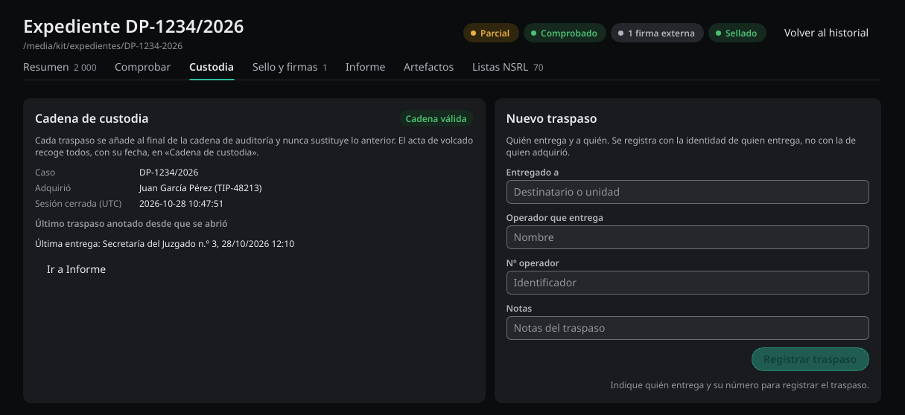

Firma
Foruster no genera ni guarda claves. La clave es del laboratorio y se crea una vez:
# Privada. Custódiala: quien la tenga puede firmar.
openssl genpkey -algorithm ed25519 -out laboratorio.key
chmod 600 laboratorio.key
# Pública, para quien deba comprobar.
openssl pkey -in laboratorio.key -pubout -out laboratorio.pubPara firmar un expediente ya cerrado:
foruster-cli sign /casos/EXP-1-2026 --key laboratorio.key \
--signer "Nombre Apellidos" --signer-id "ID-0001"
Un expediente firmado no se vuelve a firmar sin --force, y la
sustitución queda como asiento de custodia. La firma Ed25519 es avanzada,
no cualificada en el sentido de eIDAS.
La clave pública se reparte por fuera del expediente: por diligencia, en el informe o desde el registro del laboratorio. Una clave que viaje dentro no sirve, porque quien altere el expediente puede cambiarla y volver a firmar. Sin una clave de confianza, Foruster dice que la firma está presente pero sin comprobar.
Sello de tiempo
Un sello RFC 3161 acredita que el manifiesto existía en la fecha que da la autoridad de sellado, no cuándo se hizo la adquisición. Foruster solo envía el hash del manifiesto, y un sello nunca se sustituye.
foruster-cli timestamp /casos/EXP-1-2026 --tsa http://tsa.ejemplo.es
Si la autoridad solo atiende por https://, pide el sello
aparte y cárgalo:
openssl ts -query -data /casos/EXP-1-2026/manifest.json -sha256 -cert -out manifest.tsq
curl -H "Content-Type: application/timestamp-query" \
--data-binary @manifest.tsq https://tsa.ejemplo.es -o manifest.tsr
foruster-cli timestamp /casos/EXP-1-2026 --import manifest.tsr
Foruster comprueba que el sello corresponde al manifiesto, no la
firma de la autoridad. Esa firma y su cadena de certificados se
comprueban con openssl ts -verify. El sello solo es
cualificado si la autoridad es un prestador cualificado.
openssl ts -verify -data manifest.json -in manifest.tsr \
-CAfile certificado-ac-tsa.pemFirma externa
Si tu organización firma con otra herramienta, como AutoFirma, puedes
adjuntar esa firma de manifest.json al expediente:
foruster-cli attach-signature /casos/EXP-1-2026 --file manifest.json.csig \
--signer "Nombre Apellidos" --signer-id "ID-0001"
Foruster guarda el fichero, anota su hash y un asiento de custodia, y lo
cita en el informe. No comprueba la firma: eso se hace con la
herramienta que la creó o con openssl cms -verify.

Comprobación
verify revisa el manifiesto, la cadena de auditoría y el hash
de cada elemento; con --public-key, también la firma. Si algo
no concuerda, sale con un código distinto de cero. Con
--json, el campo pass resume el resultado.
foruster-cli verify /casos/EXP-1-2026 --public-key laboratorio.pub
foruster-cli verify /casos/EXP-1-2026 --public-key laboratorio.pub --json
Borrar la firma no sirve para pasar: con --public-key, un
expediente sin firma falla.
Por un tercero
La firma cubre los bytes de manifest.json tal como están
guardados, así que se comprueba sin Foruster:
openssl pkeyutl -verify -pubin -inkey laboratorio.pub \
-rawin -in manifest.json -sigfile manifest.sigLas imágenes se comprueban como explica Imagen de volúmenes y discos.
Custodia
Cada traspaso se añade al final de la cadena de auditoría. Al volver a comprobar el expediente se ve que el añadido no la rompió.
foruster-cli custody /casos/EXP-1-2026 --to "Secretaría" \
--operator "Nombre Apellidos" --operator-id "ID-0001"
La firma y el sello cubren la auditoría hasta el cierre. Los asientos posteriores quedan encadenados: alterar uno se detecta, pero añadir o quitar asientos al final no. El informe lo declara.
Foruster respalda la cadena de custodia; no la sustituye. La custodia física del soporte sigue el procedimiento de tu organización.